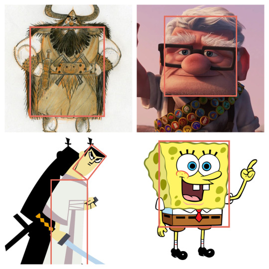
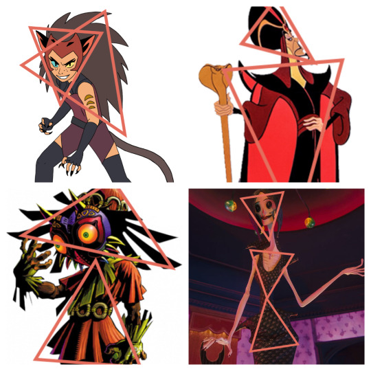
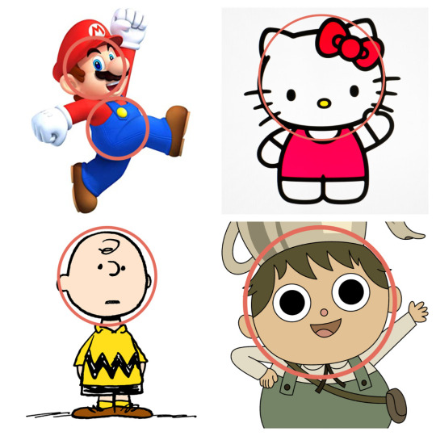
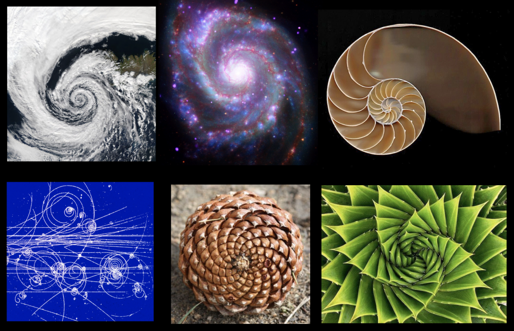

Como as formas influenciam o Design?
Acredito que você já tenha ouvido falar (ou lido) sobre a psicologia das cores e deve saber que cada uma delas, evoca um sentimento diferente no receptor da mensagem. O vermelho por exemplo, é bastante utilizado no ramo alimentício e a explicação é simples: ele tem o poder estimular o apetite. (Para saber mais sobre o assunto, leia o livro Psicologia das Cores da autora Eva Heller). No entanto, você sabia que as formas geométricas também podem transmitir significados diferentes e influenciar na arte em geral, seja no design ou na fotografia?
Psicologia das formas
É fato que analisamos tudo como formas. Pense por exemplo num aglomerado de casas e como você reproduziria isso num desenho simples. Certamente utilizaria formas retangulares e triangulares para representá-las. Assim como desenharia um círculo para o sol. Nem sempre percebemos, mas somos cercados por figuras e formas que impactam nosso comportamento. A ciência responsável por esse estudo se chama Psicologia das Formas. Estudos afirmam que cada forma geométrica influencia e provoca reações diferentes em nossa mente. A escolha por uma forma específica pode funcionar até mesmo como um fator de avaliação de caráter. Após anos de estudos e testes, hoje é possível determinar o significado e a influência causada por cada uma delas, como veremos a seguir.
Quadrados e Retângulos
São formas bastante associadas à construções, solidez e por consequência segurança.
Significados possíveis:
- Disciplina;
- Força;
- Coragem;
- Seriedade;
- Segurança
Triângulos
As formas triangulares são normalmente associadas à movimento e dinamismo, uma vez que suas extremidades guiam nossos olhares para a direção que eles apontam. Triângulos voltados pra cima podem remeter a ideia de crescimento, evolução, enquanto aqueles voltados para baixo, podem passar a sensação de risco, perda.
Signifícados possíveis:
- Risco;
- Excitação;
- Perigo;
- Estabilidade
Círculos e Elipses
O significado mais comum entre as percepções sobre essa forma, é o de sensação de infinidade, uma vez que ela não possui um início ou fim. É também bastante associada aos astros e à magia.
Signifícados possíveis:
- Perfeição;
- Amizade;
- Inovação;
- Feminilidade;
- Proteção
Espirais
São formas encontradas com maior frequência na natureza e por isso associadas à vida e crescimento. Na sociedade moderna, são encaradas como signo de criatividade.
Significados possíveis:
- Crescimento;
- Vitalidade;
- Calma
Trabalhos com significado são melhores aceitos e as formas podem ajudar a contar histórias. Por isso, saber o que cada forma representa pode ser um grande diferencial na concepção de um projeto.